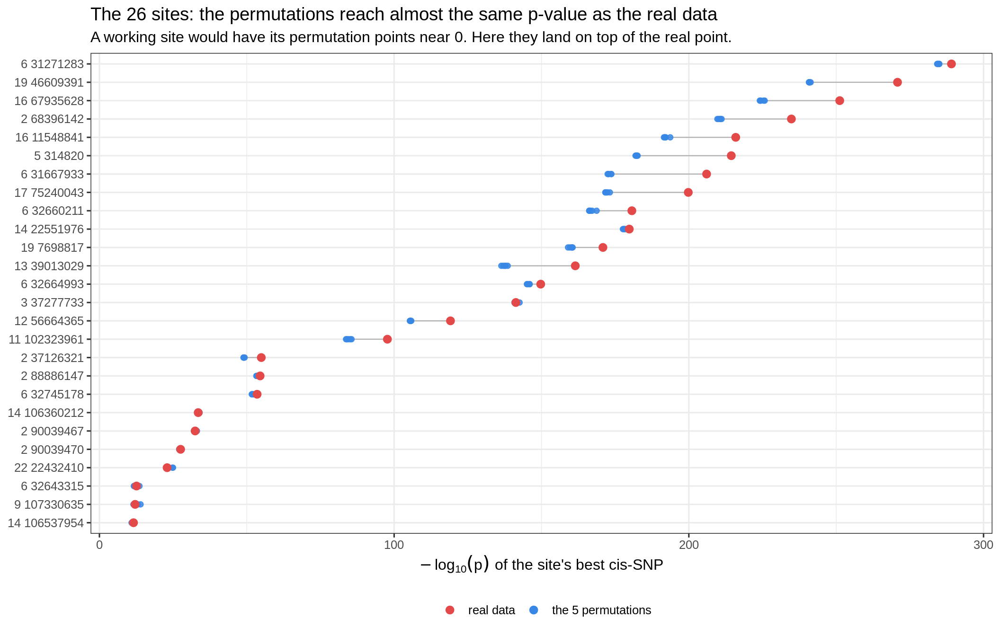
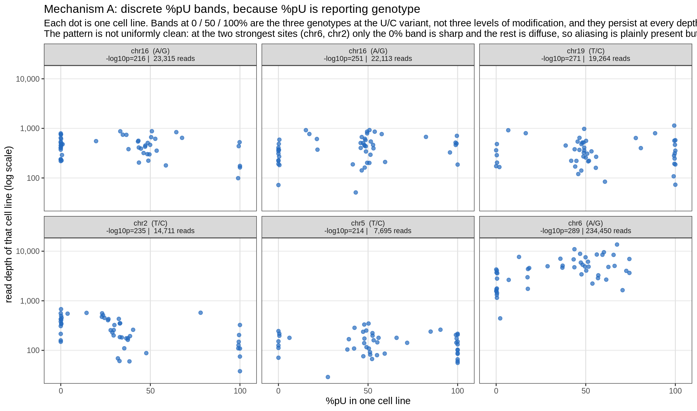
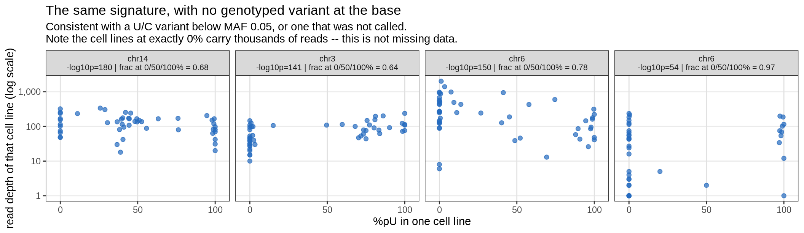
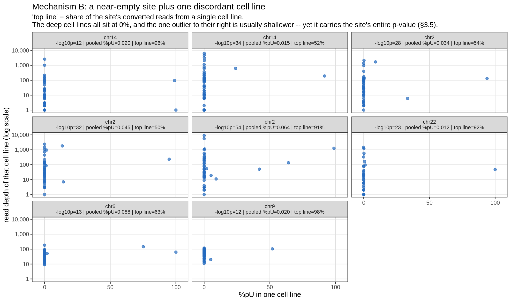
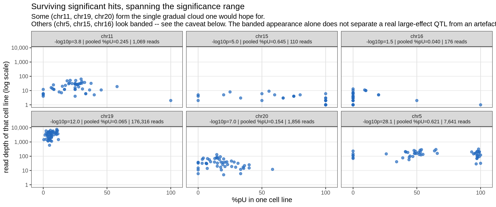
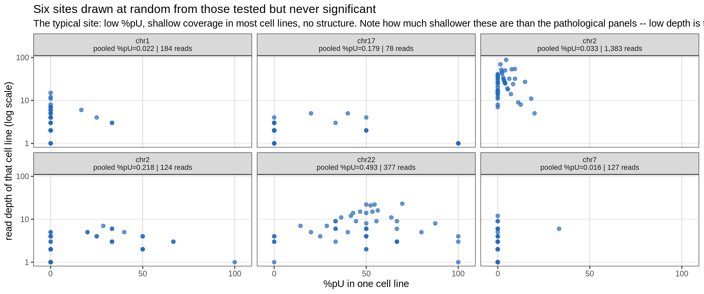
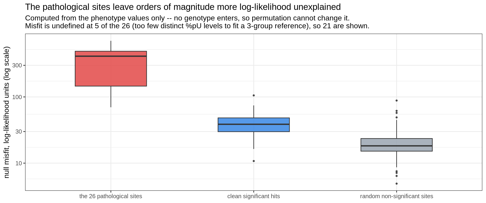
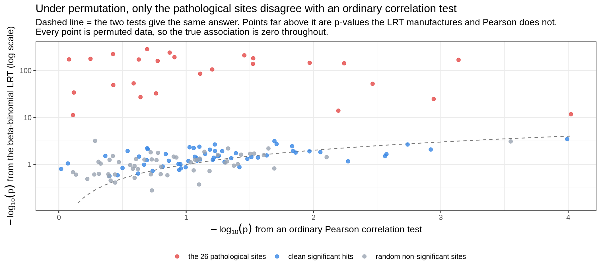
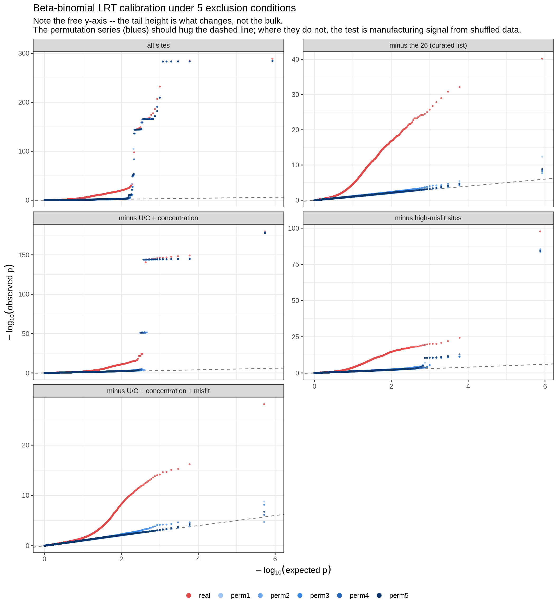
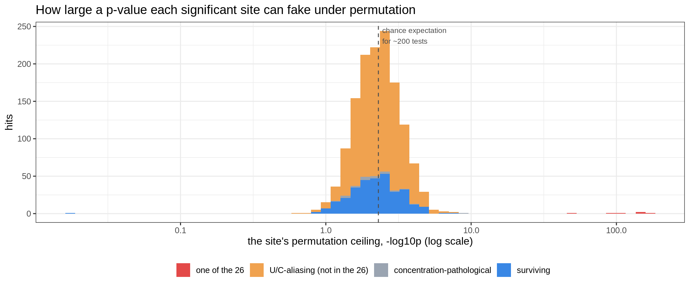

Last updated: 2026-08-17
Checks: 6 1
Knit directory: pumseq/
This reproducible R Markdown analysis was created with workflowr (version 1.7.0). The Checks tab describes the reproducibility checks that were applied when the results were created. The Past versions tab lists the development history.
The R Markdown file has unstaged changes. To know which version of
the R Markdown file created these results, you’ll want to first commit
it to the Git repo. If you’re still working on the analysis, you can
ignore this warning. When you’re finished, you can run
wflow_publish to commit the R Markdown file and build the
HTML.
Great job! The global environment was empty. Objects defined in the global environment can affect the analysis in your R Markdown file in unknown ways. For reproduciblity it’s best to always run the code in an empty environment.
The command set.seed(20260202) was run prior to running
the code in the R Markdown file. Setting a seed ensures that any results
that rely on randomness, e.g. subsampling or permutations, are
reproducible.
Great job! Recording the operating system, R version, and package versions is critical for reproducibility.
Nice! There were no cached chunks for this analysis, so you can be confident that you successfully produced the results during this run.
Great job! Using relative paths to the files within your workflowr project makes it easier to run your code on other machines.
Great! You are using Git for version control. Tracking code development and connecting the code version to the results is critical for reproducibility.
The results in this page were generated with repository version 9b5f28e. See the Past versions tab to see a history of the changes made to the R Markdown and HTML files.
Note that you need to be careful to ensure that all relevant files for
the analysis have been committed to Git prior to generating the results
(you can use wflow_publish or
wflow_git_commit). workflowr only checks the R Markdown
file, but you know if there are other scripts or data files that it
depends on. Below is the status of the Git repository when the results
were generated:
Ignored files:
Ignored: analysis/qtl_mapping_summary_cache/
Unstaged changes:
Modified: analysis/qtl_mapping_betabinomial_pathology_summary.Rmd
Note that any generated files, e.g. HTML, png, CSS, etc., are not included in this status report because it is ok for generated content to have uncommitted changes.
These are the previous versions of the repository in which changes were
made to the R Markdown
(analysis/qtl_mapping_betabinomial_pathology_summary.Rmd)
and HTML
(docs/qtl_mapping_betabinomial_pathology_summary.html)
files. If you’ve configured a remote Git repository (see
?wflow_git_remote), click on the hyperlinks in the table
below to view the files as they were in that past version.
| File | Version | Author | Date | Message |
|---|---|---|---|---|
| Rmd | 9b5f28e | XSun | 2026-08-17 | update |
| html | 9b5f28e | XSun | 2026-08-17 | update |
| Rmd | 53b1926 | XSun | 2026-08-17 | update |
| html | 53b1926 | XSun | 2026-08-17 | update |
suppressMessages({ library(data.table); library(ggplot2) })
knitr::opts_chunk$set(echo = TRUE, warning = FALSE, message = FALSE,
fig.align = "center", fig.width = 11)
BASE <- "/project/xinhe/xsun/pumseq/pumseq_processed/psi_qtl"
DAT <- file.path(BASE, "qtl_betabinomial/summary_page_data")
DIAG <- file.path(BASE, "qtl_betabinomial/diagnostic_figures")
COUNTS <- file.path(BASE, "phenotype/fold5_union/counts")
PSAM <- file.path(BASE, "genotype/plink2/pumseq_genotype.hg38.chr1-22.psam")
site26 <- fread(file.path(DAT, "site26_class.tsv"))
mf <- fread(file.path(DAT, "misfit_by_class.tsv"))
pw <- fread(file.path(DAT, "perm_winner.tsv"))
lev <- fread(file.path(DAT, "leverage_demo.tsv"))
aud <- fread(file.path(DAT, "sig_audit.tsv"))
c10 <- fread(file.path(DAT, "clean10_pearson.tsv"))
qq <- fread(file.path(DAT, "qq_conditions.tsv.gz"))
lam <- fread(file.path(DAT, "lambda_conditions.tsv"))
exc <- fread(file.path(DAT, "exclusion_counts.tsv"))
patho <- fread(file.path(DIAG, "pathological_sites.txt"))
C <- fread(file.path(COUNTS, "C_matrix.txt.gz")); N <- fread(file.path(COUNTS, "N_matrix.txt.gz"))
go <- fread(PSAM)[[2]]
Cm <- as.matrix(C[, ..go]); Nm <- as.matrix(N[, ..go]); sid_all <- paste(C$ref, C$pos)
CLS_COL <- c(`the 26 pathological sites` = "#e34948",
`clean significant hits` = "#3987e5",
`random non-significant sites` = "#9aa4b1")
COND_LV <- c("all sites", "minus the 26 (curated list)",
"minus U/C + concentration", "minus high-misfit sites",
"minus U/C + concentration + misfit")
mf_all <- fread(file.path(DAT, "misfit_all_sites.tsv.gz"))
sens <- fread(file.path(DAT, "misfit_threshold_sensitivity.tsv"))
runinf <- fread(file.path(DAT, "runinfo.tsv"))
MISFIT_CUT <- as.numeric(runinf[parameter == "misfit_cut"]$value)
# tail height per condition, used in the prose below
tailh <- qq[, .(mx = max(observed)), by = .(condition, dataset)]
th_of <- function(cond, ds = "real") round(tailh[condition == cond & dataset == ds]$mx, 1)
lam_of <- function(cond, ds = "real") round(lam[condition == cond & dataset == ds]$lambda, 3)The beta-binomial LRT scan produced a set of top hits that permutation did not displace: 19 of the 20 strongest sites under a random permutation of the phenotype were the same sites as the real top 20, and not one of them shared a lead SNP with its real counterpart. A permutation is supposed to destroy all genotype-phenotype signal, so this meant the sites were being selected for a reason unrelated to genotype.
This page traces that to its cause. In brief:
-log10 p > 10), and those 26 turn out to be extreme in
all six datasets. The selection used the permuted data
only, so nothing here is circular.knitr::kable(exc, col.names = c("", "n"),
caption = "Scale of the problem, and what each filter removes")| n | |
|---|---|
| sites tested (in the calibration scan) | 11187 |
| the 26 pathological sites | 26 |
| U/C-aliasing sites (SNP on the pU base) | 1118 |
| concentration-pathological sites (top_share >= 0.5) | 1588 |
| high-misfit sites (misfit > 50) | 435 |
| sites removed by all three filters combined | 2740 |
| significant hits, q < 0.05 | 1385 |
| of those: one of the 26 | 6 |
| of those: U/C-aliasing (not in the 26) | 1047 |
| of those: concentration-pathological | 21 |
| of those: surviving the U/C + concentration filters | 311 |
| of those survivors also flagged by misfit | 37 |
| surviving all three filters | 274 |
Under permutation there is, by construction, no genotype-phenotype relationship. So any site that still returns an extreme p-value under permutation is broken on its own terms — no comparison with the real data is needed to establish that.
This is important for what follows: the 26 sites were selected using the permuted data only. Looking afterwards at the real QQ plot is therefore not circular. Had they been picked using the real p-values, flattening the real tail would have been guaranteed and would have proved nothing.
8.calibration_site_resolved.R repeats the genome-wide
cis scan six times — once on the real data and once under each of five
phenotype permutations (set.seed(1000 + k); the phenotype
and the covariates are reindexed, the genotypes are not) — and,
unlike the earlier calibration script, keeps the site identity
attached to every p-value. That is what makes it possible to
ask which sites the inflated tail comes from.
knitr::kable(data.table(
criterion = c("minimum p < 1e-10 in at least one of the 5 permutations",
"real -log10(p) > 10",
"-> sites meeting both"),
purpose = c("the site can fake an extreme p-value with no signal present",
"drops sites that were extreme in a single permutation by chance",
"extreme in every one of the 6 datasets (verified individually)"),
n = c("27", "", paste0(nrow(site26)))),
caption = "Selection criteria (9.qq_exclude_pathological.R)")| criterion | purpose | n |
|---|---|---|
| minimum p < 1e-10 in at least one of the 5 permutations | the site can fake an extreme p-value with no signal present | 27 |
| real -log10(p) > 10 | drops sites that were extreme in a single permutation by chance | |
| -> sites meeting both | extreme in every one of the 6 datasets (verified individually) | 26 |
Exactly one of the 27 candidates was extreme in a single permutation only; the other 26 are extreme in all six datasets.
Each row is one site. The red point is the real data; the blue points are the five permutations. For a normal site the permutations would sit near zero, far below the real point.
P <- paste0("perm", 1:5)
lg <- melt(patho[, c("sid", "real", P), with = FALSE], id.vars = "sid",
variable.name = "dataset", value.name = "nlp")
lg[, is_real := dataset == "real"]
ordv <- patho[order(real)]$sid
lg[, sid := factor(sid, levels = ordv)]
ggplot(lg, aes(nlp, sid)) +
geom_line(aes(group = sid), colour = "grey70", linewidth = 0.4) +
geom_point(data = lg[!is_real & TRUE], aes(colour = "the 5 permutations"),
size = 1.7, alpha = 0.85) +
geom_point(data = lg[is_real == TRUE], aes(colour = "real data"), size = 2.6) +
scale_colour_manual(values = c(`real data` = "#e34948",
`the 5 permutations` = "#3987e5"), name = NULL) +
labs(x = expression(-log[10]("p")~"of the site's best cis-SNP"), y = NULL,
title = "The 26 sites: the permutations reach almost the same p-value as the real data",
subtitle = "A working site would have its permutation points near 0. Here they land on top of the real point.") +
theme_bw(base_size = 12) + theme(legend.position = "bottom")
| Version | Author | Date |
|---|---|---|
| 53b1926 | XSun | 2026-08-17 |
knitr::kable(patho[order(-real)][, .(
site = sid,
`real -log10p` = round(real, 1),
`permutation mean` = round(perm_mean, 1),
`permutation SD` = round(perm_sd, 2),
`real - best permutation` = round(real_excess_over_perm_max, 1))],
caption = paste("The 26 sites. The last column is how much of the real signal",
"survives after subtracting what permutation produces at the",
"same site -- for most of them, a few percent of the total."))| site | real -log10p | permutation mean | permutation SD | real - best permutation |
|---|---|---|---|---|
| 6 31271283 | 289.1 | 284.6 | 0.33 | 4.1 |
| 19 46609391 | 270.8 | 241.0 | 0.23 | 29.5 |
| 16 67935628 | 251.2 | 224.8 | 0.74 | 25.5 |
| 2 68396142 | 234.8 | 210.4 | 0.56 | 23.7 |
| 16 11548841 | 215.9 | 192.2 | 0.85 | 22.2 |
| 5 314820 | 214.4 | 182.3 | 0.28 | 31.8 |
| 6 31667933 | 206.0 | 173.1 | 0.59 | 32.3 |
| 17 75240043 | 199.8 | 172.2 | 0.63 | 26.6 |
| 6 32660211 | 180.7 | 167.0 | 1.05 | 12.0 |
| 14 22551976 | 179.8 | 178.1 | 0.43 | 1.0 |
| 19 7698817 | 170.8 | 160.0 | 0.65 | 10.3 |
| 13 39013029 | 161.5 | 137.5 | 0.81 | 22.9 |
| 6 32664993 | 149.7 | 145.5 | 0.44 | 3.8 |
| 3 37277733 | 141.3 | 141.6 | 0.65 | -1.3 |
| 12 56664365 | 119.1 | 105.6 | 0.19 | 13.3 |
| 11 102323961 | 97.7 | 84.5 | 0.77 | 12.2 |
| 2 37126321 | 54.9 | 49.0 | 0.15 | 5.7 |
| 2 88886147 | 54.5 | 53.8 | 0.64 | -0.2 |
| 6 32745178 | 53.5 | 52.0 | 0.34 | 1.0 |
| 14 106360212 | 33.5 | 33.7 | 0.29 | -0.5 |
| 2 90039467 | 32.5 | 32.8 | 0.28 | -0.6 |
| 2 90039470 | 27.5 | 27.2 | 0.16 | 0.1 |
| 22 22432410 | 23.0 | 23.7 | 1.06 | -2.0 |
| 6 32643315 | 12.6 | 12.3 | 0.79 | -1.0 |
| 9 107330635 | 12.1 | 12.5 | 1.02 | -1.9 |
| 14 106537954 | 11.6 | 11.3 | 0.28 | 0.0 |
Two things stand out. The permutation SD is tiny (mostly < 1 unit
on the -log10 p scale), so the five permutations agree
closely with each other: this is a stable property of the site, not a
fluke. And the real data exceeds the best permutation by only
4% of its total (median) — for five sites the real data
does not exceed the permutations at all.
cnt <- site26[, .N, by = class][order(-N)]
knitr::kable(cnt, col.names = c("class", "n"),
caption = "The 26 sites fall into two mechanisms")| class | n |
|---|---|
| U/C SNP on the pU base | 14 |
| one cell line dominates | 8 |
| 3-clump shape, no genotyped SNP at the base | 4 |
knitr::kable(site26[, .(site = sid, `-log10p` = real_nlp,
`SNP at the pU base` = ifelse(snp_at_site == "", "--", snp_at_site),
`pooled %pU` = pooled_pu,
`frac at 0/50/100%` = spike3,
`top cell-line share` = top_share,
class)],
caption = paste("Every one of the 26, classified.",
"'frac at 0/50/100%' is the fraction of cell lines whose %pU is within",
"0.08 of 0, 0.5 or 1 -- the signature of a genotype read-out.",
"'top cell-line share' is the largest share of the site's converted",
"reads coming from a single cell line."))| site | -log10p | SNP at the pU base | pooled %pU | frac at 0/50/100% | top cell-line share | class |
|---|---|---|---|---|---|---|
| 6 31271283 | 289.1 | A/G | 0.431 | 0.60 | 0.09 | U/C SNP on the pU base |
| 19 46609391 | 270.8 | T/C | 0.561 | 0.86 | 0.10 | U/C SNP on the pU base |
| 16 67935628 | 251.2 | A/G | 0.440 | 0.86 | 0.07 | U/C SNP on the pU base |
| 2 68396142 | 234.8 | T/C | 0.256 | 0.46 | 0.12 | U/C SNP on the pU base |
| 16 11548841 | 215.9 | A/G | 0.310 | 0.84 | 0.07 | U/C SNP on the pU base |
| 5 314820 | 214.4 | T/C | 0.560 | 0.84 | 0.05 | U/C SNP on the pU base |
| 6 31667933 | 206.0 | T/C | 0.456 | 0.94 | 0.09 | U/C SNP on the pU base |
| 17 75240043 | 199.8 | A/G | 0.592 | 0.84 | 0.10 | U/C SNP on the pU base |
| 6 32660211 | 180.7 | A/G | 0.148 | 0.66 | 0.08 | U/C SNP on the pU base |
| 14 22551976 | 179.8 | – | 0.416 | 0.68 | 0.07 | 3-clump shape, no genotyped SNP at the base |
| 19 7698817 | 170.8 | A/G | 0.199 | 0.86 | 0.12 | U/C SNP on the pU base |
| 13 39013029 | 161.5 | A/G | 0.500 | 0.82 | 0.08 | U/C SNP on the pU base |
| 6 32664993 | 149.7 | – | 0.175 | 0.78 | 0.14 | 3-clump shape, no genotyped SNP at the base |
| 3 37277733 | 141.3 | – | 0.534 | 0.64 | 0.11 | 3-clump shape, no genotyped SNP at the base |
| 12 56664365 | 119.1 | A/G | 0.108 | 0.96 | 0.21 | U/C SNP on the pU base |
| 11 102323961 | 97.7 | T/C | 0.116 | 0.90 | 0.26 | U/C SNP on the pU base |
| 2 37126321 | 54.9 | A/G | 0.100 | 0.94 | 0.39 | U/C SNP on the pU base |
| 2 88886147 | 54.5 | – | 0.064 | 0.93 | 0.91 | one cell line dominates |
| 6 32745178 | 53.5 | – | 0.357 | 0.97 | 0.23 | 3-clump shape, no genotyped SNP at the base |
| 14 106360212 | 33.5 | – | 0.015 | 0.96 | 0.52 | one cell line dominates |
| 2 90039467 | 32.5 | – | 0.045 | 0.95 | 0.50 | one cell line dominates |
| 2 90039470 | 27.5 | – | 0.034 | 0.95 | 0.54 | one cell line dominates |
| 22 22432410 | 23.0 | – | 0.012 | 1.00 | 0.92 | one cell line dominates |
| 6 32643315 | 12.6 | T/G | 0.088 | 0.98 | 0.63 | one cell line dominates |
| 9 107330635 | 12.1 | – | 0.020 | 1.00 | 0.98 | one cell line dominates |
| 14 106537954 | 11.6 | – | 0.020 | 1.00 | 0.96 | one cell line dominates |
Pseudouridine is a modified uridine: the assay reads out the base at that position. If a common sequence variant changes that same base from U to C, then an inherited C is indistinguishable from a modification event. The measured “%pU” becomes a read-out of genotype.
This shows up as C/T on the + strand and A/G on the − strand — the same U→C change on the transcript, written against whichever genome strand the transcript came from. Genome-wide, 1,118 sites (10.0% of those tested) have such a variant.
The consequence is a phenotype with three discrete bands: homozygous reference near 0%, heterozygous near 50%, homozygous alternate near 100%.
pu_long <- function(ids, labs) rbindlist(lapply(seq_along(ids), function(k) {
i <- match(ids[k], sid_all); n <- Nm[i, ]; sel <- n > 0
data.table(lab = labs[k], pu = Cm[i, sel] / n[sel], n = n[sel])
}))
# One dot per cell line: x = %pU, y = its read depth on a log axis. Both axes
# carry meaning, so the discrete %pU bands stay visible while depth is exact
# rather than binned -- and a band made only of shallow cell lines is obvious
# because it sits low.
plot_pu_depth <- function(dd, title, subtitle, ncol = 3) {
ggplot(dd, aes(pu, pmax(n, 1))) +
geom_vline(xintercept = c(0, 0.5, 1), colour = "grey88", linewidth = 0.4) +
geom_point(colour = "#256abf", alpha = 0.7, size = 1.7) +
scale_x_continuous(limits = c(-0.04, 1.04), breaks = c(0, 0.5, 1),
labels = c("0", "50", "100")) +
scale_y_log10(labels = scales::comma) +
facet_wrap(~ lab, ncol = ncol) +
labs(x = "%pU in one cell line", y = "read depth of that cell line (log scale)",
title = title, subtitle = subtitle) +
theme_bw(base_size = 11) +
theme(strip.text = element_text(size = 8), panel.grid.minor = element_blank())
}
uc_ex <- site26[class == "U/C SNP on the pU base"][order(-real_nlp)][1:6]
d <- pu_long(uc_ex$sid, sprintf("chr%s (%s)\n-log10p=%.0f | %s reads",
sub(" .*", "", uc_ex$sid),
uc_ex$snp_at_site, uc_ex$real_nlp,
format(uc_ex$total_depth, big.mark = ",")))
plot_pu_depth(d,
"Mechanism A: discrete %pU bands, because %pU is reporting genotype",
paste("Each dot is one cell line. Bands at 0 / 50 / 100% are the three genotypes",
"at the U/C variant, not three levels of modification, and they persist at",
"every depth -- so they are not a low-coverage artefact.",
"\nThe pattern is not uniformly clean: at the two strongest sites (chr6, chr2)",
"only the 0% band is sharp and the rest is diffuse, so aliasing is plainly",
"present but is not the whole story there."))
Beyond the 14 with an actual variant call, four more show the same three-clump shape but have no genotyped variant at the base. The most likely explanation is the same mechanism with a variant below our MAF 0.05 threshold or one that was not called — but that is inferred from the phenotype shape and not directly confirmed. The clearest is chr14:22551976: 11 cell lines at exactly 0.00, 26 in a tight band near 0.40, 12 at ~1.00, with ~130 reads each. No enzymatic modification rate behaves that way.
s26 <- copy(site26)
s26[, chr := sub(" .*", "", sid)][, pos := as.integer(sub(".* ", "", sid))]
s26[, mhc := chr == "6" & pos > 28.5e6 & pos < 33.4e6]
knitr::kable(s26[, .(sites = .N,
`median -log10p` = round(median(real_nlp), 1),
classes = paste(sort(unique(sub(",.*", "", class))), collapse = "; ")),
by = .(region = ifelse(mhc, "chr6 MHC (28.5-33.4 Mb)", "rest of the genome"))],
caption = paste("The MHC is 5 Mb, about 0.16% of the genome, but supplies",
sprintf("%d of the 26 (%.0f%%).", sum(s26$mhc), 100*mean(s26$mhc))))| region | sites | median -log10p | classes |
|---|---|---|---|
| chr6 MHC (28.5-33.4 Mb) | 6 | 165.2 | 3-clump shape; U/C SNP on the pU base; one cell line dominates |
| rest of the genome | 20 | 130.2 | 3-clump shape; U/C SNP on the pU base; one cell line dominates |
6 of the 26 sit in the MHC — every chr6 site among them, inside a 5 Mb window that is roughly 0.16% of the genome. That is a ~144-fold enrichment, and it fits the mechanism: the MHC is the most polymorphic region in the human genome and among the hardest to map, so it is exactly where you would expect both uncalled U↔︎C variants and reference-mapping artefacts to concentrate. It also strengthens the inference about the four sites with no variant call — two of those four are in the MHC, where a variant missing from our call set is unsurprising rather than a stretch.
These four matter out of proportion to their number. Because no
variant is called at the base, no annotation-based filter can
see them — and they include the second, third and fourth
strongest offenders in the entire scan (-log10 p of 179.8,
149.7, 141.3). Any filter that works only from variant calls will leave
the QQ tail nearly where it started; §4 shows this happening and what
fixes it.
ns <- site26[class == "3-clump shape, no genotyped SNP at the base"][order(-real_nlp)]
d2 <- pu_long(ns$sid, sprintf("chr%s\n-log10p=%.0f | frac at 0/50/100%% = %.2f",
sub(" .*", "", ns$sid), ns$real_nlp, ns$spike3))
plot_pu_depth(d2,
"The same signature, with no genotyped variant at the base",
paste("Consistent with a U/C variant below MAF 0.05, or one that was not called.",
"\nNote the cell lines at exactly 0% carry thousands of reads -- this is not missing data."),
ncol = 4)
These sites have essentially no modification at all — pooled %pU between 1% and 9%. Most cell lines have thousands of reads and a handful of converted ones. Then one cell line reports a large %pU on modest depth.
cc <- site26[class == "one cell line dominates"][order(-real_nlp)]
d3 <- pu_long(cc$sid, sprintf("chr%s\n-log10p=%.0f | pooled %%pU=%.3f | top line=%.0f%%",
sub(" .*", "", cc$sid), cc$real_nlp,
cc$pooled_pu, 100 * cc$top_share))
plot_pu_depth(d3,
"Mechanism B: a near-empty site plus one discordant cell line",
paste("'top line' = share of the site's converted reads from a single cell line.",
"\nThe deep cell lines all sit at 0%, and the one outlier to their right is",
"usually shallower -- yet it carries the site's entire p-value (\u00a73.5)."))
The most extreme case, chr9:107330635, has 98% of its converted reads from one cell line out of 50. There is nothing to make a QTL out of.
One thing the figure invites but does not support: many of the cell
lines sitting at 0% have only a handful of reads, which looks like it
might be the real problem. It is not. Shallow cell lines are the norm
throughout this dataset — at a randomly chosen site the median cell line
has 9 reads and 53% of covered cell
lines have fewer than 10, whereas these eight sites are better
covered than average (median 40 reads, 25% below 10 reads). So low depth
is background conditions here, not the distinguishing feature. What
singles these sites out is the concentration of the converted reads,
which is why the filter is written on top_share rather than
on depth.
The panels above are only interpretable against a baseline. Same axes, same builder, two comparison sets: significant hits that survive both filters, and sites drawn at random from those tested but never significant.
set.seed(20260817)
surv_ids <- aud[class == "surviving" & !is.na(real)][order(real)]$sid
pick_s <- surv_ids[unique(round(seq(1, length(surv_ids), length.out = 6)))]
rand_ids <- sample(setdiff(mf_all$sid, aud$sid), 6)
lab_of <- function(ids, with_p) vapply(seq_along(ids), function(k) {
i <- match(ids[k], sid_all)
base <- sprintf("chr%s\npooled %%pU=%.3f | %s reads", sub(" .*", "", ids[k]),
sum(Cm[i, ]) / sum(Nm[i, ]), format(sum(Nm[i, ]), big.mark = ","))
if (!with_p) return(base)
sub("\n", sprintf("\n-log10p=%.1f | ", aud[sid == ids[k]]$real), base)
}, character(1))
ds <- pu_long(pick_s, lab_of(pick_s, TRUE))
dr <- pu_long(rand_ids, lab_of(rand_ids, FALSE))plot_pu_depth(ds,
"Surviving significant hits, spanning the significance range",
paste("Some (chr11, chr19, chr20) form the single gradual cloud one would hope for.",
"\nOthers (chr5, chr15, chr16) look banded -- see the caveat below. The banded",
"appearance alone does not separate a real large-effect QTL from an artefact."))
plot_pu_depth(dr,
"Six sites drawn at random from those tested but never significant",
paste("The typical site: low %pU, shallow coverage in most cell lines,",
"no structure. Note how much shallower these are than the",
"pathological panels -- low depth is the norm here, not the defect."))
The tempting conclusion — pathological sites have gaps, working sites have a continuum — is only half right, and the comparison panels are what expose it.
s3 <- function(x) sprintf("%.2f (range %.2f-%.2f)", median(x, na.rm = TRUE),
min(x, na.rm = TRUE), max(x, na.rm = TRUE))
knitr::kable(data.table(
`site set` = c("the 14 U/C-aliasing sites", "the 311 surviving significant hits"),
`frac of cell lines at 0 / 50 / 100%` = c(s3(site26[uc_alias == TRUE]$spike3),
s3(aud[class == "surviving"]$spike3)),
`n with frac >= 0.80` = c(sum(site26[uc_alias == TRUE]$spike3 >= 0.80, na.rm = TRUE),
sum(aud[class == "surviving"]$spike3 >= 0.80, na.rm = TRUE))),
caption = paste("The distributions overlap heavily:",
sum(aud[class == "surviving"]$spike3 >= 0.80, na.rm = TRUE),
"of the 311 survivors are as banded as the median U/C site."))| site set | frac of cell lines at 0 / 50 / 100% | n with frac >= 0.80 |
|---|---|---|
| the 14 U/C-aliasing sites | 0.85 (range 0.46-0.96) | 11 |
| the 311 surviving significant hits | 0.70 (range 0.00-1.00) | 93 |
The reason is uncomfortable but simple. A genuine large-effect pU-QTL produces the same picture as aliasing. If a variant largely abolishes modification, then non-carriers sit high, homozygous carriers sit near 0%, heterozygotes sit between — three bands, from real biology.
The clearest case is the strongest surviving hit, chr5:170083186:
knitr::kable(data.table(
quantity = c("frac of cell lines at 0 / 50 / 100%",
"|cor| of lead SNP with %pU",
"beta-binomial LRT -log10p",
"ordinary Pearson -log10p, same SNP",
"permutation ceiling",
"lead SNP distance from the pU base",
"variant called on the pU base?"),
value = c(sprintf("%.2f -- as banded as a U/C site", aud[sid == "5 170083186"]$spike3),
sprintf("%.3f", c10[sid == "5 170083186"]$abs_cor),
sprintf("%.1f", c10[sid == "5 170083186"]$lrt_nlp),
sprintf("%.1f -- agrees", c10[sid == "5 170083186"]$pearson_nlp),
sprintf("%.1f -- chance level", aud[sid == "5 170083186"]$perm_ceil),
"202 bp", "no")),
caption = "Statistically textbook; visually indistinguishable from aliasing.")| quantity | value |
|---|---|
| frac of cell lines at 0 / 50 / 100% | 0.84 – as banded as a U/C site |
| |cor| of lead SNP with %pU | 0.967 |
| beta-binomial LRT -log10p | 28.1 |
| ordinary Pearson -log10p, same SNP | 29.4 – agrees |
| permutation ceiling | 3.6 – chance level |
| lead SNP distance from the pU base | 202 bp |
| variant called on the pU base? | no |
Every statistical check passes: permutation destroys the signal, an ordinary correlation test agrees with the LRT, and the correlation is 0.97. Yet the %pU pattern is banded and no variant is called at the base. Both readings fit — either a real variant 202 bp away with a near-complete effect on modification, or an uncalled U↔︎C variant at the base in linkage with it — and the data on this page cannot separate them. Resolving it needs the base-level sequence, not more statistics.
So the honest version of the rule: gaps in %pU are a red flag requiring a variant check at the base, not a verdict. What §3 quantifies is why gaps break the test; whether a given set of gaps is biology or artefact is a separate question, and for a minority of the survivors it is still open.
The test fits the site twice — once without the SNP, once with it — and the p-value comes from the gap between the two fits. It does not come from how well the second fit works in absolute terms.
The model has only two knobs, a mean and a dispersion, and “the SNP has an effect” can only be expressed as “the SNP shifts the mean”. So the no-SNP fit must describe all 50 cell lines with a single mean.
Six cell lines, 100 reads each, and two toy sites. Fit each twice — once forced to use a single rate for all six cell lines, once allowed three — then ask the model how probable the observed data is:
toy <- function(y) {
sc <- function(y, p) sum(dbinom(y, 100, p, log = TRUE))
one <- sc(y, mean(y) / 100)
three <- sum(sapply(split(y, rep(1:3, each = 2)),
function(g) sc(g, mean(g) / 100)))
list(one = one, three = three)
}
A <- toy(c(96, 96, 49, 49, 3, 3)); B <- toy(c(52, 48, 51, 49, 50, 50))
knitr::kable(data.table(
site = c("A: three clumps -- 96, 96, 49, 49, 3, 3",
"B: one blob -- 52, 48, 51, 49, 50, 50"),
`P(data), one rate` = sprintf("%.0e", exp(c(A$one, B$one))),
`P(data), three rates` = sprintf("%.0e", exp(c(A$three, B$three))),
`misfit` = sprintf("%.1f", c(A$three - A$one, B$three - B$one))),
caption = paste("A binomial version, for legibility. The one-rate model calls",
"site A's data essentially impossible; at site B, allowing",
"three rates buys nothing at all."))| site | P(data), one rate | P(data), three rates | misfit |
|---|---|---|---|
| A: three clumps – 96, 96, 49, 49, 3, 3 | 1e-99 | 1e-05 | 216.7 |
| B: one blob – 52, 48, 51, 49, 50, 50 | 2e-07 | 2e-07 | 0.0 |
Misfit is that improvement. At site A roughly 217 log-likelihood units of improvement are available and the one-rate model collects none of them; at site B there are none to collect. Nothing else is meant by “unexplained”.
A beta distribution with one mean can be a single hump, a tilted hump, or a U-shape with mass at both ends. It cannot place three separate spikes at 0, 0.5 and 1. So at the pathological sites the null fit is not merely imperfect, it is structurally incapable, and the misfit is enormous.
For cell line \(i\), \(y_i\) converted reads out of \(n_i\) total. Beta-binomial with mean \(\mu_i\) and a single dispersion \(\phi\) shared across cell lines:
\[\mu_i = \operatorname{logit}^{-1}\!\left(X_i^\top\beta\right), \qquad k = \frac{1-\phi}{\phi}, \qquad a_i = \mu_i k, \qquad b_i = (1-\mu_i)k\]
\[\ell(\beta,\phi) \;=\; \sum_i \left[\log\binom{n_i}{y_i} \;+\; \log B\!\left(y_i + a_i,\; n_i - y_i + b_i\right) \;-\; \log B\!\left(a_i,\, b_i\right)\right]\]
with \(B\) the beta function. Each
fit maximises this over \((\beta,\phi)\) using optim
with an analytic gradient, started from a binomial glm.fit;
\(\phi\) is reparameterised as \(\phi = \varepsilon +
(1-2\varepsilon)\operatorname{logit}^{-1}(\theta)\) with \(\varepsilon = 10^{-6}\), to keep it off the
\(\phi = 0\) boundary where \(k \to \infty\) degenerates the
likelihood.
Two designs are fitted to the same \(y, n\):
\[X_{\text{null}} = \left[\mathbf{1},\ \text{PC}_1,\ \text{PC}_2,\ \text{PC}_3\right]\]
\[X_{\text{ref}} = \left[X_{\text{null}},\ \mathbb{1}\{c_i = 2\},\ \mathbb{1}\{c_i = 3\}\right]\]
where \(c_i \in \{1,2,3\}\) comes from 3-means clustering of the observed rates \(p_i = y_i/n_i\), relabelled by ascending cluster centre. Then
\[\textbf{misfit} \;=\; \hat\ell\!\left(X_{\text{ref}}\right) - \hat\ell\!\left(X_{\text{null}}\right)\]
Two properties make this the right yardstick.
It is nested, so misfit \(\ge 0\) up to optimiser noise — and it has the same form as the test statistic itself, which is \(2\!\left(\hat\ell_{\text{full}} - \hat\ell_{\text{null}}\right)\) with the SNP appended in place of the indicators. The statistic and the misfit draw on the same quantity, which is the whole argument of this section.
It is genotype-free. \(X_{\text{ref}}\) is built from \(p_i\) alone. Under a permutation \(\sigma\), all of \(y\), \(n\), \(X_{\text{null}}\) and the cluster labels are reindexed by that same \(\sigma\), so every term in the sum is the same term in a different order. Misfit is therefore exactly permutation-invariant — §3.3.
Two caveats, the second of them serious.
Three clusters is an arbitrary choice, so this is a floor on the unexplained likelihood rather than all of it: a phenotype with four distinct levels would have more than this measures.
More importantly, misfit is undefined wherever fewer than six cell lines are covered, fewer than three distinct \(p_i\) exist, or either fit fails to converge — with 49 cell lines at exactly zero there is no third cluster to form. That is not a rare edge case:
knitr::kable(data.table(
`site set` = c("all tested sites", "the 26 pathological sites",
"the 311 surviving significant hits"),
n = c(nrow(mf_all), sum(mf_all$is26), sum(aud$class == "surviving")),
`misfit undefined` = c(
sprintf("%s (%.1f%%)", format(sum(is.na(mf_all$misfit)), big.mark = ","),
100 * mean(is.na(mf_all$misfit))),
sprintf("%d", sum(is.na(mf_all[is26 == TRUE]$misfit))),
sprintf("%d (%.0f%%)",
sum(is.na(mf_all[sid %chin% aud[class == "surviving"]$sid]$misfit)),
100 * mean(is.na(mf_all[sid %chin% aud[class == "surviving"]$sid]$misfit))))),
caption = "Where misfit cannot be computed at all")| site set | n | misfit undefined |
|---|---|---|
| all tested sites | 11187 | 4,557 (40.7%) |
| the 26 pathological sites | 26 | 5 |
| the 311 surviving significant hits | 311 | 57 (18%) |
Misfit is uncomputable for over 40% of tested sites. A filter blind to two fifths of the data is a partial instrument, not a solution — and the blindness is not random: it concentrates exactly where the phenotype is most degenerate, which is where the artefacts live. Four of the five unmeasurable sites among the 26 are concentration sites. This is the main reason misfit cannot replace the concentration cap, and it should temper how §4.3’s combined-filter numbers are read.
mfp <- mf[is.finite(misfit)]
mfp[, class := factor(class, levels = names(CLS_COL))]
knitr::kable(mfp[, .(sites = .N,
`median misfit` = round(median(misfit), 1),
`25th pct` = round(quantile(misfit, .25), 1),
`75th pct` = round(quantile(misfit, .75), 1),
`max` = round(max(misfit), 1)), by = class],
caption = paste("Null misfit (log-likelihood units left unexplained by the",
"one-mean model), computed without using genotype."))| class | sites | median misfit | 25th pct | 75th pct | max |
|---|---|---|---|---|---|
| the 26 pathological sites | 21 | 412.3 | 145.6 | 490.0 | 704.1 |
| clean significant hits | 134 | 38.6 | 29.9 | 48.3 | 105.5 |
| random non-significant sites | 167 | 18.2 | 15.2 | 23.5 | 88.2 |
ggplot(mfp, aes(class, pmax(misfit, 0.05), fill = class)) +
geom_boxplot(width = 0.5, alpha = 0.85, outlier.size = 0.9) +
scale_y_log10() + scale_fill_manual(values = CLS_COL, guide = "none") +
labs(x = NULL, y = "null misfit, log-likelihood units (log scale)",
title = "The pathological sites leave orders of magnitude more log-likelihood unexplained",
subtitle = paste("Computed from the phenotype values only -- no genotype enters,",
"so permutation cannot change it.",
sprintf("\nMisfit is undefined at %d of the 26 (too few distinct %%pU levels to fit a 3-group reference), so %d are shown.",
26 - nrow(mfp[class == "the 26 pathological sites"]),
nrow(mfp[class == "the 26 pathological sites"])))) +
theme_bw(base_size = 12)
| Version | Author | Date |
|---|---|---|
| 53b1926 | XSun | 2026-08-17 |
Permutation reorders which cell line holds which %pU value. The set of values is unchanged. Since misfit is a property of that set and not of its alignment with genotype, permutation leaves it untouched — the whole pot of unexplained log-likelihood is still on the table after shuffling.
That is the entire failure. The LRT depends on two things:
Permutation destroys only the second. When the first is large enough, the p-value barely moves.
If the p-value came from association, then an ordinary Pearson correlation test on the same lead SNP should broadly agree with it. Pearson has no dispersion parameter and no depth weighting, so misfit cannot inflate it — which makes it a useful independent yardstick.
Below, for each site, the LRT -log10 p under
permutation 1 against the Pearson -log10 p for the
very same SNP and the same data.
pw[, class := factor(class, levels = names(CLS_COL))]
# NB: geom_abline() in a log-scaled panel is drawn in TRANSFORMED space, i.e. it
# renders y = 10^x rather than y = x. The identity line must be supplied as
# explicit data so that it curves correctly under the log transform.
# The line spans the x-axis data range only -- extending it to the y range would
# stretch the x-axis to ~290 and squash every point into a sliver.
xr <- range(pw$pearson_nlp, na.rm = TRUE)
iden <- data.table(x = seq(max(xr[1], 0.15), xr[2], length.out = 200))
iden[, y := x]
ggplot(pw, aes(pearson_nlp, lrt_nlp, colour = class)) +
geom_line(data = iden, aes(x, y), inherit.aes = FALSE,
linetype = "dashed", colour = "grey45") +
geom_point(size = 2, alpha = 0.8) +
scale_colour_manual(values = CLS_COL, name = NULL) +
scale_y_log10() +
labs(x = expression(-log[10]("p")~"from an ordinary Pearson correlation test"),
y = expression(-log[10]("p")~"from the beta-binomial LRT (log scale)"),
title = "Under permutation, only the pathological sites disagree with an ordinary correlation test",
subtitle = paste("Dashed line = the two tests give the same answer. Points far above it are",
"p-values the LRT manufactures and Pearson does not.",
"\nEvery point is permuted data, so the true association is zero throughout.")) +
theme_bw(base_size = 12) + theme(legend.position = "bottom")
| Version | Author | Date |
|---|---|---|
| 53b1926 | XSun | 2026-08-17 |
knitr::kable(pw[, .(sites = .N,
`median LRT -log10p` = round(median(lrt_nlp), 1),
`median Pearson -log10p` = round(median(pearson_nlp), 1),
`median gap` = round(median(gap), 1),
`median |cor| of the LRT winner` = round(median(abs_cor), 2)),
by = class],
caption = paste("Under permutation 1: what the LRT reports versus what an",
"ordinary correlation test reports for the same SNP."))| class | sites | median LRT -log10p | median Pearson -log10p | median gap | median |cor| of the LRT winner |
|---|---|---|---|---|---|
| the 26 pathological sites | 26 | 140.6 | 0.9 | 138.7 | 0.22 |
| clean significant hits | 60 | 1.5 | 1.1 | 0.2 | 0.26 |
| random non-significant sites | 56 | 1.1 | 0.8 | 0.2 | 0.21 |
Two worked examples make the size of the gap concrete.
ex_ids <- c("19 46609391", "14 106360212")
ee <- pw[sid %chin% ex_ids]
knitr::kable(data.table(
site = ee$sid,
mechanism = ifelse(ee$sid == "19 46609391", "A: U/C variant on the base",
"B: one cell line dominates"),
`cis-SNPs tested` = ee$n_cis,
`null misfit` = round(ee$misfit, 0),
`|cor| of the LRT winner` = round(ee$abs_cor, 3),
`best |cor| available at the site` = round(ee$best_abs_cor, 3),
`Pearson p for that SNP` = signif(ee$pearson_p, 2),
`beta-binomial LRT p` = sprintf("%.0e", 10^(-ee$lrt_nlp))),
caption = "Both rows are permuted data, so the true association is zero by construction.")| site | mechanism | cis-SNPs tested | null misfit | |cor| of the LRT winner | best |cor| available at the site | Pearson p for that SNP | beta-binomial LRT p |
|---|---|---|---|---|---|---|---|
| 19 46609391 | A: U/C variant on the base | 14 | 620 | 0.214 | 0.228 | 0.13 | 2e-241 |
| 14 106360212 | B: one cell line dominates | 44 | 95 | 0.045 | 0.328 | 0.76 | 1e-34 |
At chr19:46609391 the winning SNP correlates with the permuted phenotype at |cor| = 0.21, which an ordinary test rates p = 0.13 — nothing. At chr14:106360212 it is |cor| = 0.045, p = 0.76 — a shapeless cloud. The LRT converts both into p-values of astronomical size, because there is a large pot of misfit for even a negligible correlation to draw on.
Note also that neither site’s best available correlation is large. With a few dozen cis-SNPs to choose from, one always lands slightly closer to the clumps than the others by luck — which is why a different SNP wins in every permutation, and why the top hits share sites but never lead SNPs.
For the concentration sites the point can be made directly: drop the single most extreme cell line and rerun the site unchanged.
knitr::kable(lev[order(-orders_lost, na.last = FALSE)][, .(
site = sid,
`top cell-line share` = top_share,
`converted reads it holds` = format(dropped_conv, big.mark = ","),
`its total reads` = format(dropped_depth, big.mark = ","),
`-log10p with all cell lines` = round(nlp_all, 1),
`-log10p after dropping it` = ifelse(is.na(nlp_drop1), "no fit",
sprintf("%.1f", nlp_drop1)),
`orders lost` = ifelse(is.na(orders_lost), "--", sprintf("%.1f", orders_lost)))],
caption = paste("Under permutation 1: removing the single cell line that holds",
"the most converted reads. 'no fit' means the site could not be",
"fitted at all once that cell line was gone."))| site | top cell-line share | converted reads it holds | its total reads | -log10p with all cell lines | -log10p after dropping it | orders lost |
|---|---|---|---|---|---|---|
| 6 32643315 | 0.63 | 109 | 145 | 11.7 | no fit | – |
| 9 107330635 | 0.98 | 54 | 104 | 14.0 | no fit | – |
| 2 88886147 | 0.91 | 1,263 | 1,278 | 53.2 | 0.4 | 52.9 |
| 2 90039467 | 0.50 | 243 | 1,804 | 32.6 | 0.6 | 31.9 |
| 2 90039470 | 0.54 | 151 | 1,687 | 27.1 | 0.4 | 26.8 |
| 14 106360212 | 0.52 | 176 | 192 | 34.0 | 7.3 | 26.6 |
| 22 22432410 | 0.92 | 47 | 47 | 24.7 | 1.1 | 23.7 |
| 14 106537954 | 0.96 | 94 | 95 | 11.2 | 0.6 | 10.7 |
Why Pearson misses this while the likelihood does not: a cell line with 6,000 reads at %pU 0.0005 and a cell line with 20 reads at 0.05 count equally in a correlation, but the likelihood weights the first thousands of times more heavily. A SNP can therefore split the deep near-zero cell lines from the rest — worth an enormous amount of likelihood — while barely moving the correlation. (For the record, the earlier guess that rare-allele SNPs isolating one or two cell lines were responsible is wrong: with MAF ≥ 0.05 across 50 cell lines the minor allele is always carried by at least 5, and none of the cis-SNPs at these sites had fewer than 4 carriers.)
Dropping the 26 sites by name would fix this page’s QQ plot and nothing else: the next dataset will have a different 26. So each exclusion below is stated as a rule computable for any site, and the curated list is kept only as the reference for what a perfect filter would achieve.
Three rules are available:
knitr::kable(data.table(
rule = c("U/C-aliasing", "concentration", "high misfit"),
definition = c("a genotyped C/T (+ strand) or A/G (- strand) variant on the pU base",
sprintf("one cell line supplies >= %.0f%% of the site's converted reads",
100 * as.numeric(runinf[parameter == "conc_cut"]$value)),
sprintf("null misfit > %g log-likelihood units", MISFIT_CUT)),
`needs genotype?` = c("yes, a variant call at the base", "no", "no"),
`sites removed` = format(c(as.integer(runinf[parameter == "n_uc_alias"]$value),
as.integer(runinf[parameter == "n_conc_bad"]$value),
as.integer(runinf[parameter == "n_misfit_bad"]$value)),
big.mark = ",")),
caption = "The three exclusion rules, each computable without knowing which sites are broken")| rule | definition | needs genotype? | sites removed |
|---|---|---|---|
| U/C-aliasing | a genotyped C/T (+ strand) or A/G (- strand) variant on the pU base | yes, a variant call at the base | 1,118 |
| concentration | one cell line supplies >= 50% of the site’s converted reads | no | 1,588 |
| high misfit | null misfit > 50 log-likelihood units | no | 435 |
The misfit rule matters because the first two rules miss four of the 26 — the sites with the three-clump shape but no genotyped variant at the base (§2.2). Those four include the second, third and fourth worst offenders in the whole scan, so an annotation-only filter leaves the tail almost untouched.
The misfit threshold was chosen as the smallest round value that catches every one of the 26 for which misfit is measurable, then reported here rather than tuned against the QQ plot:
knitr::kable(sens[, .(
`misfit threshold` = threshold,
`sites removed` = format(sites_removed, big.mark = ","),
`% of tested` = sprintf("%.1f%%", pct_of_tested),
`of the 26, caught` = sprintf("%d of %d", of_the_26_caught, of_the_26_measurable))],
caption = sprintf("Threshold sensitivity. The value used is %g.", MISFIT_CUT))| misfit threshold | sites removed | % of tested | of the 26, caught |
|---|---|---|---|
| 50 | 435 | 3.9% | 21 of 21 |
| 100 | 19 | 0.2% | 18 of 21 |
| 150 | 15 | 0.1% | 15 of 21 |
| 200 | 15 | 0.1% | 15 of 21 |
| 300 | 14 | 0.1% | 14 of 21 |
all sites is the calibration as originally run. Recall
that the 26 were chosen using the permuted data only, so the real panels
are not circular.
qq[, condition := factor(condition, levels = COND_LV)]
qq[, dataset := factor(dataset, levels = c("real", paste0("perm", 1:5)))]
COLS <- c(real = "#e34948", perm1 = "#9ec5f4", perm2 = "#6da7ec",
perm3 = "#3987e5", perm4 = "#256abf", perm5 = "#0d366b")
lab <- lam[, .(t = paste(sprintf("%s=%.2f", dataset, lambda), collapse = " ")),
by = condition]
ggplot(qq, aes(expected, observed, colour = dataset)) +
geom_abline(slope = 1, intercept = 0, linetype = "dashed", colour = "grey45") +
geom_point(size = 0.6, alpha = 0.75) +
scale_colour_manual(values = COLS, name = NULL) +
guides(colour = guide_legend(override.aes = list(size = 2.6, alpha = 1), nrow = 1)) +
facet_wrap(~ condition, ncol = 2, scales = "free_y") +
labs(x = expression(-log[10]("expected p")), y = expression(-log[10]("observed p")),
title = sprintf("Beta-binomial LRT calibration under %d exclusion conditions",
length(COND_LV)),
subtitle = paste("Note the free y-axis -- the tail height is what changes, not the bulk.",
"\nThe permutation series (blues) should hug the dashed line; where they do",
"not, the test is manufacturing signal from shuffled data.")) +
theme_bw(base_size = 12) + theme(legend.position = "bottom")
| Version | Author | Date |
|---|---|---|
| 53b1926 | XSun | 2026-08-17 |
ORD <- c("real", paste0("perm", 1:5))
lw <- dcast(lam, dataset ~ condition, value.var = "lambda")
setcolorder(lw, c("dataset", COND_LV))
lw <- lw[order(factor(dataset, levels = ORD))]
knitr::kable(lw, digits = 3,
caption = "lambda -- the median-based genomic inflation factor")| dataset | all sites | minus the 26 (curated list) | minus U/C + concentration | minus high-misfit sites | minus U/C + concentration + misfit |
|---|---|---|---|---|---|
| real | 2.473 | 2.430 | 1.426 | 2.052 | 1.337 |
| perm1 | 1.195 | 1.178 | 1.062 | 1.169 | 1.055 |
| perm2 | 0.961 | 0.950 | 1.032 | 0.976 | 1.040 |
| perm3 | 1.102 | 1.089 | 1.045 | 1.103 | 1.048 |
| perm4 | 1.087 | 1.073 | 1.059 | 1.109 | 1.057 |
| perm5 | 1.034 | 1.020 | 1.034 | 1.052 | 1.047 |
tw <- dcast(tailh, dataset ~ condition, value.var = "mx")
setcolorder(tw, c("dataset", COND_LV))
tw <- tw[order(factor(dataset, levels = ORD))]
knitr::kable(tw, digits = 1,
caption = "Height of the QQ tail: the largest observed -log10(p)")| dataset | all sites | minus the 26 (curated list) | minus U/C + concentration | minus high-misfit sites | minus U/C + concentration + misfit |
|---|---|---|---|---|---|
| real | 289.1 | 40.2 | 179.8 | 97.7 | 28.1 |
| perm1 | 285.0 | 12.4 | 177.9 | 85.5 | 8.8 |
| perm2 | 284.9 | 7.7 | 178.7 | 85.1 | 4.7 |
| perm3 | 284.3 | 8.5 | 178.3 | 83.7 | 8.1 |
| perm4 | 284.4 | 8.3 | 177.9 | 83.9 | 6.1 |
| perm5 | 284.6 | 8.8 | 177.6 | 84.4 | 6.8 |
The two tables measure different things, and the key result of this section is that the rules fix different things, and no single one of them is enough.
knitr::kable(data.table(
condition = COND_LV,
`real lambda` = vapply(COND_LV, lam_of, numeric(1)),
`real tail` = vapply(COND_LV, th_of, numeric(1)),
`worst permuted tail` = vapply(COND_LV, function(c)
round(max(tailh[condition == c & dataset != "real"]$mx), 1), numeric(1)),
`p-values retained` = vapply(COND_LV, function(c)
format(lam[condition == c & dataset == "real"]$n_pvalues, big.mark = ","),
character(1))),
row.names = FALSE,
caption = paste("The permuted tail is the diagnostic that matters: with the",
"phenotype shuffled it should be near 0, and anything above",
"~3 is signal the test is manufacturing."))| condition | real lambda | real tail | worst permuted tail | p-values retained |
|---|---|---|---|---|
| all sites | 2.473 | 289.1 | 285.0 | 424,293 |
| minus the 26 (curated list) | 2.430 | 40.2 | 12.4 | 420,919 |
| minus U/C + concentration | 1.426 | 179.8 | 178.7 | 271,592 |
| minus high-misfit sites | 2.052 | 97.7 | 85.5 | 374,893 |
| minus U/C + concentration + misfit | 1.337 | 28.1 | 8.8 | 259,420 |
Reading down that table:
λ and the tail are almost independent. Removing the 26 collapses the tail from 289.1 to 40.2 — and the permuted tail from ~285 to 12.4 — while barely touching λ (2.473 → 2.43). λ comes from the median test statistic, and 26 sites out of ~11,000 cannot move a median. Conversely the U/C plus concentration rules pull λ down to 1.426 — much the larger effect on λ — yet leave the tail at 179.8, essentially unchanged. λ was never the right diagnostic for this problem, which is why the original calibration check reported reassuring-looking numbers while the tail was at 289.
Misfit alone is not sufficient either. It cuts the tail to 97.7, better than the annotation rules but well short of the curated list. The reason is specific and limits the rule generally: misfit is undefined at 5 of the 26, and indeed at 41% of all tested sites (§3.2), because a site with 49 cell lines at exactly zero has no three distinct %pU levels for the reference model to use. Four of those five are concentration sites, so misfit and the concentration cap are complementary by construction rather than redundant — but it also means the misfit rule is silent on a large fraction of the genome, and silent precisely where phenotypes are most degenerate.
The three rules together beat the curated list on these metrics. Applying all three gives λ = 1.337, a real tail of 28.1, and a permuted tail of 8.8 — better on every measure than naming the 26 by hand, and computable on data where nobody has told you which sites are broken.
What it costs. The combined filter removes 2,740 of 11,187 tested sites (24%). That is not a small price, and the misfit threshold is the loose part of it: the 26 sites where misfit is measurable range from 69.9 to 704.1, while ordinary significant hits reach 105.5, so the two distributions overlap and a cut of 50 necessarily removes some legitimate sites — 37 of the 311 hits that pass the other two rules. Whether that trade is worth making is a judgement call, not something these numbers settle.
A residual permuted excess remains even after all exclusions, so this is a large improvement rather than a complete fix — see Open questions.
The concern is that misfit might explain a large share of the ~1,400 significant hits, not just 26 of them. Two checks, applied to the hits that are not among the 26:
Check 1 — a second opinion. Compare the LRT against an ordinary Pearson correlation test on the same lead SNP. Agreement means the signal is real; a large gap means only the fancy machinery sees it.
Check 2 — the site’s own fake-signal ceiling. For
each site, take the best -log10 p it reached in
any of the five permutations. That is how large a p-value the
site can manufacture with no signal present. Compare the real result
against it.
aud[, class := factor(class, levels = c("one of the 26", "U/C-aliasing (not in the 26)",
"concentration-pathological", "surviving"))]
knitr::kable(aud[, .(hits = .N,
`median real -log10p` = round(median(real, na.rm = TRUE), 1),
`median perm ceiling` = round(median(perm_ceil, na.rm = TRUE), 1),
`median excess` = round(median(excess, na.rm = TRUE), 1),
`excess < 2` = sum(excess < 2, na.rm = TRUE),
`excess > 5` = sum(excess > 5, na.rm = TRUE)), by = class],
caption = paste("For every q<0.05 hit: the real signal against the largest",
"p-value the same site reached under permutation."))| class | hits | median real -log10p | median perm ceiling | median excess | excess < 2 | excess > 5 |
|---|---|---|---|---|---|---|
| one of the 26 | 6 | 134.4 | 122.2 | 11.2 | 0 | 5 |
| U/C-aliasing (not in the 26) | 1047 | 15.7 | 2.3 | 13.5 | 16 | 942 |
| surviving | 311 | 5.9 | 2.2 | 3.6 | 80 | 115 |
| concentration-pathological | 21 | 4.3 | 2.0 | 2.0 | 10 | 1 |
The permutation ceiling for the non-pathological hits sits at about
2.2, and that number is exactly what chance predicts:
with roughly 40 cis-SNPs per site across 5 permutations, the best of
~200 uniform p-values falls near 1/200, i.e. -log10 p ≈
2.3. These sites have no capacity to fake signal at
all. The 26, by contrast, reach ~122.
af <- aud[!is.na(perm_ceil)]
ggplot(af, aes(perm_ceil, fill = class)) +
geom_histogram(bins = 60) +
geom_vline(xintercept = 2.3, linetype = "dashed", colour = "grey30") +
annotate("text", x = 2.3, y = Inf, label = " chance expectation\n for ~200 tests",
hjust = 0, vjust = 1.4, size = 3, colour = "grey30") +
scale_fill_manual(values = c(`one of the 26` = "#e34948",
`U/C-aliasing (not in the 26)` = "#f0a24f",
`concentration-pathological` = "#9aa4b1",
`surviving` = "#3987e5"), name = NULL) +
scale_x_log10() +
labs(x = "the site's permutation ceiling, -log10p (log scale)", y = "hits",
title = "How large a p-value each significant site can fake under permutation") +
theme_bw(base_size = 12) + theme(legend.position = "bottom")
| Version | Author | Date |
|---|---|---|
| 53b1926 | XSun | 2026-08-17 |
Ten surviving hits, chosen to span the whole range from the strongest to the weakest, each tested both ways on the real data.
knitr::kable(c10[, .(site = sid, lead_SNP = lead,
`LRT -log10p` = round(lrt_nlp, 1),
`Pearson -log10p` = round(pearson_nlp, 1),
gap = round(gap, 1),
`|cor|` = round(abs_cor, 2),
`perm ceiling` = round(perm_ceil, 1),
`total depth` = format(round(total_depth), big.mark = ","),
`pooled %pU` = round(pooled_pu, 3))],
caption = "Ten surviving hits: the beta-binomial LRT against an ordinary correlation test")| site | lead_SNP | LRT -log10p | Pearson -log10p | gap | |cor| | perm ceiling | total depth | pooled %pU |
|---|---|---|---|---|---|---|---|---|
| 5 170083186 | 5:170083388:G:A | 28.1 | 29.4 | -1.2 | 0.97 | 3.6 | 7,641 | 0.621 |
| 6 32643306 | 6:32643864:A:G | 15.2 | 17.3 | -2.1 | 0.89 | 4.7 | 7,887 | 0.687 |
| 22 44170685 | 22:44170554:G:A | 11.6 | 10.9 | 0.7 | 0.79 | 1.9 | 879 | 0.150 |
| 6 32665102 | 6:32664801:T:G | 8.3 | 10.1 | -1.8 | 0.88 | 3.6 | 175 | 0.486 |
| 7 44802176 | 7:44797723:C:A | 6.6 | 4.7 | 1.9 | 0.56 | 2.0 | 1,136 | 0.568 |
| 1 630974 | 1:632317:G:A | 5.4 | 2.2 | 3.2 | 0.38 | 2.3 | 20,897 | 0.465 |
| 13 24426505 | 13:24423561:A:C | 4.5 | 3.0 | 1.5 | 0.45 | 1.6 | 1,513 | 0.566 |
| 7 24668632 | 7:24671345:A:G | 3.9 | 4.9 | -1.0 | 0.58 | 1.3 | 653 | 0.043 |
| 6 30490918 | 6:30486299:T:C | 3.2 | 3.1 | 0.2 | 0.46 | 1.8 | 838 | 0.041 |
| 16 29511256 | 16:29509752:G:T | 1.5 | 4.6 | -3.1 | 0.57 | 0.0 | 176 | 0.040 |
The gap is small in both directions — at the strongest site the Pearson test is more significant than the LRT — and the correlations are large and visible. Against gaps of ~241 and ~34 at the two pathological examples, these behave like ordinary associations tested by a slightly better-powered method, which is what the beta-binomial is supposed to be.
Check 2 screens every site cheaply, and it found a class the original 26-site criteria missed: hits with the mechanism-B concentration signature that never happened to produce a p-value below 1e-10 under permutation.
cn <- aud[class == "concentration-pathological"][order(-top_share)]
knitr::kable(cn[, .(site = sid,
`top cell-line share` = round(top_share, 2),
`pooled %pU` = round(pooled_pu, 3),
`real -log10p` = round(real, 1),
`perm ceiling` = round(perm_ceil, 1),
excess = round(excess, 1),
qvalue = signif(qvalue, 2))],
caption = paste("Significant hits where one cell line supplies at least half",
"the converted reads. These are not misfit artifacts -- they are",
"single-observation artifacts, and they need a separate filter."))| site | top cell-line share | pooled %pU | real -log10p | perm ceiling | excess | qvalue |
|---|---|---|---|---|---|---|
| 14 106062163 | 1.00 | 0.407 | 4.1 | 1.9 | 2.2 | 8.6e-03 |
| 2 88861486 | 0.97 | 0.010 | 2.9 | 2.5 | 0.4 | 4.8e-02 |
| 1 109100574 | 0.96 | 0.055 | 4.3 | 4.1 | 0.3 | 1.9e-02 |
| 2 89085376 | 0.96 | 0.015 | 7.4 | 2.4 | 5.0 | 1.4e-05 |
| 14 106715102 | 0.95 | 0.023 | 5.1 | 8.8 | -3.7 | 4.3e-02 |
| 14 106360094 | 0.95 | 0.083 | 5.2 | 2.8 | 2.4 | 1.0e-03 |
| 6 37028882 | 0.92 | 0.024 | 3.9 | 2.0 | 1.9 | 1.6e-02 |
| 3 157154639 | 0.83 | 0.022 | 4.5 | 1.2 | 3.3 | 6.0e-03 |
| 16 89557215 | 0.69 | 0.014 | 3.5 | 1.4 | 2.0 | 4.8e-02 |
| 6 106569361 | 0.69 | 0.019 | 3.5 | 1.5 | 2.0 | 5.0e-02 |
| 2 152656145 | 0.67 | 0.028 | 3.8 | 2.5 | 1.2 | 7.6e-03 |
| 11 59182401 | 0.67 | 0.013 | 5.4 | 3.1 | 2.3 | 1.6e-04 |
| 14 106421966 | 0.64 | 0.092 | 2.6 | 1.9 | 0.7 | 2.1e-02 |
| 10 87050843 | 0.62 | 0.036 | 4.9 | 3.7 | 1.2 | 1.5e-02 |
| 2 89319679 | 0.62 | 0.009 | 6.7 | 2.0 | 4.7 | 1.4e-05 |
| 17 36166151 | 0.60 | 0.033 | 3.2 | 1.6 | 1.5 | 4.3e-02 |
| 11 34471001 | 0.52 | 0.027 | 4.0 | 2.1 | 1.9 | 3.2e-03 |
| 6 32852077 | 0.52 | 0.054 | 5.5 | 1.9 | 3.6 | 1.1e-03 |
| 1 629617 | 0.50 | 0.028 | 5.5 | 2.1 | 3.4 | 4.8e-04 |
| 9 137454828 | 0.50 | 0.041 | 4.5 | 1.4 | 3.1 | 2.1e-03 |
| 16 74674988 | 0.50 | 0.031 | 4.0 | 1.4 | 2.6 | 8.5e-03 |
The worst has a single cell line supplying 100% of the site’s converted reads. At least one has a permutation ceiling above its real result (negative excess) and still passes q < 0.05. Several cluster inside a narrow window on chr14, which suggests a regional mapping artifact rather than independent events.
knitr::kable(aud[, .(hits = .N,
`median -log10p` = round(median(real, na.rm = TRUE), 1),
`share of all hits` = sprintf("%.1f%%", 100 * .N / nrow(aud))), by = class],
caption = "The q<0.05 hit list, partitioned")| class | hits | median -log10p | share of all hits |
|---|---|---|---|
| one of the 26 | 6 | 134.4 | 0.4% |
| U/C-aliasing (not in the 26) | 1047 | 15.7 | 75.6% |
| surviving | 311 | 5.9 | 22.5% |
| concentration-pathological | 21 | 4.3 | 1.5% |
Only 6 of the significant hits are among the 26 —
the per-site permutation perm_p did filter out most of
them, so it offers partial protection, not none. The large category is
U/C-aliasing sites that are not in the 26
(1047 hits), and these deserve a careful distinction:
Their permutation ceiling is ~2.3, i.e. chance level, so they are not a calibration failure. Statistically the associations are sound: SNPs in linkage with the site variant genuinely do predict the measured phenotype. The problem is interpretive — the phenotype is a genotype read-out rather than a modification rate, so a real association is being reported as a pU-QTL. Same exclusion, entirely different reason. This is also why
perm_pcannot protect against them: there is nothing statistically wrong to detect.
knitr::kable(fread(file.path(DAT, "runinfo.tsv")),
caption = "Parameters (10.summary_page_data.R)")| parameter | value |
|---|---|
| window_bp | 5000 |
| npcs | 3 |
| maf_min | 0.05 |
| conc_cut | 0.5 |
| misfit_cut | 50 |
| n_sites_tested | 11187 |
| n_pathological | 26 |
| n_uc_alias | 1118 |
| n_conc_bad | 1588 |
| n_misfit_bad | 435 |
| perm_seed_formula | set.seed(1000+k) |
| control_seed | 4242 |
| script | 10.summary_page_data.R |
| date | 2026-08-17 10:13:01 |
knitr::kable(data.table(
step = c("site-resolved calibration scan (6 datasets, site identity retained)",
"selection of the pathological sites",
"U/C-aliasing site list",
"all precomputed tables behind this page",
"this page"),
script = c("4.qtl_mapping_betabinomial/8.calibration_site_resolved.R",
"4.qtl_mapping_betabinomial/9.qq_exclude_pathological.R",
"4.qtl_mapping_betabinomial/9.qq_exclude_pathological.R (+ .traw allele check)",
"4.qtl_mapping_betabinomial/10.summary_page_data.R",
"analysis/qtl_mapping_betabinomial_pathology_summary.Rmd"),
submitted_via = c("run_calibration_siteres.sbatch", "-- (light)", "-- (light)",
"run_summary_page_data.sbatch", "run_render_rmd.sbatch")),
caption = "Provenance. The heavy steps require a compute node; a login node SIGKILLs them.")| step | script | submitted_via |
|---|---|---|
| site-resolved calibration scan (6 datasets, site identity retained) | 4.qtl_mapping_betabinomial/8.calibration_site_resolved.R | run_calibration_siteres.sbatch |
| selection of the pathological sites | 4.qtl_mapping_betabinomial/9.qq_exclude_pathological.R | – (light) |
| U/C-aliasing site list | 4.qtl_mapping_betabinomial/9.qq_exclude_pathological.R (+ .traw allele check) | – (light) |
| all precomputed tables behind this page | 4.qtl_mapping_betabinomial/10.summary_page_data.R | run_summary_page_data.sbatch |
| this page | analysis/qtl_mapping_betabinomial_pathology_summary.Rmd | run_render_rmd.sbatch |
Related pages: top-hit diagnostic · why the same top hits · beta-binomial scan summary
sessionInfo()R version 4.2.0 (2022-04-22)
Platform: x86_64-pc-linux-gnu (64-bit)
Running under: CentOS Linux 8
Matrix products: default
BLAS/LAPACK: /software/openblas-0.3.13-el8-x86_64/lib/libopenblas_skylakexp-r0.3.13.so
locale:
[1] C
attached base packages:
[1] stats graphics grDevices utils datasets methods base
other attached packages:
[1] ggplot2_3.4.2 data.table_1.14.4 workflowr_1.7.0
loaded via a namespace (and not attached):
[1] tidyselect_1.2.0 xfun_0.38 bslib_0.3.1 colorspace_2.0-3
[5] vctrs_0.6.1 generics_0.1.3 htmltools_0.5.7 yaml_2.3.5
[9] utf8_1.2.2 rlang_1.1.2 R.oo_1.24.0 jquerylib_0.1.4
[13] later_1.3.0 pillar_1.9.0 glue_1.6.2 withr_2.5.0
[17] R.utils_2.11.0 lifecycle_1.0.4 stringr_1.5.0 munsell_0.5.0
[21] gtable_0.3.0 R.methodsS3_1.8.1 evaluate_0.15 labeling_0.4.2
[25] knitr_1.42 callr_3.7.0 fastmap_1.1.0 httpuv_1.6.5
[29] ps_1.7.0 fansi_1.0.3 highr_0.9 Rcpp_1.0.11
[33] promises_1.2.0.1 scales_1.2.0 jsonlite_1.8.7 farver_2.1.0
[37] fs_1.5.2 digest_0.6.29 stringi_1.7.6 processx_3.5.3
[41] dplyr_1.1.2 getPass_0.2-2 rprojroot_2.0.3 grid_4.2.0
[45] cli_3.6.2 tools_4.2.0 magrittr_2.0.3 sass_0.4.1
[49] tibble_3.2.1 whisker_0.4 pkgconfig_2.0.3 rmarkdown_2.21
[53] httr_1.4.5 rstudioapi_0.14 R6_2.5.1 git2r_0.30.1
[57] compiler_4.2.0